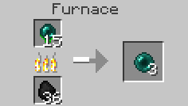

Table of content
Basics
Items
Blocks
Plant Types
Other Plants
↑
Basics
Home
Getting Started
Concepts
Getting Seeds and Resources
Crafting Recipes
Configuring the Mod
Integration with Other Mods
Items
Mineral Rock
Dense Mineral Rock
Mineral Crystal
Mineral Hoe
Seeds
Shards
Bulbs
Blocks
Mineral Soil
Mineral Stone
Organic Ore
Plant Types
Crystalline Plants
Metallic Plants
Biochemical Plants
Other Plants
Mystical Seed Pod
↑
Getting Started
Resynth is a lot like any other ore growing mod,
though it has its own mechanics which are not
as straight forward and can make it difficult
to know what to do and where to start.
This page is intended to get you started with the basics of Resynth and get you up and running so you can start growing your ores and resources.
This page is intended to get you started with the basics of Resynth and get you up and running so you can start growing your ores and resources.
Resynth - Getting Started
 Mineral Hoe - Resynths primary tool.
Mineral Hoe - Resynths primary tool.
First Things First
The first thing you will what to do is go mining.
This is the only way to
get ore seeds (apart
from plants) as well the resources needed to make Resynths
tools which are needed to grow plants.
You'll start getting seeds just by mining ores and killing mobs. Although you cannot just plant the seeds on dirt or tilled soil - you need a special block, called Mineral Soil, that can only be obtained by tilling dirt/grass (right clicking) with a Mineral Hoe.
In order to make the Mineral Hoe and get started growing the plants, you'll need Mineral Rocks. Mineral Rocks drop from Mineral Stone which only spawns in rare quantities at the very bottom of the world between Y-Levels 3 and 5 (Y-Levels 3-10 in Minecraft 1.13.2, Resynth 2.0.0). The Mineral Hoe requires 18 Mineral Rocks to be crafted. Although you'll want more than this (a lot more), as Mineral Rocks also act as a kind of fertilizer that increases the growth rate of plants. Mineral Rocks are also used as a crafting component to Mineral Crystals which are added to the Mineral Hoe as a consumable to till dirt/grass.
When mining Mineral Stone, Mineral Seeds will sometimes drop which will allow you to grow more Mineral Rocks so you don't need to keep going mining to grow/fertilize more plants. Mineral Seeds are pretty common so you should have a few by the time you're done mining.
Mineral Stone next to some bedrock
You'll start getting seeds just by mining ores and killing mobs. Although you cannot just plant the seeds on dirt or tilled soil - you need a special block, called Mineral Soil, that can only be obtained by tilling dirt/grass (right clicking) with a Mineral Hoe.
In order to make the Mineral Hoe and get started growing the plants, you'll need Mineral Rocks. Mineral Rocks drop from Mineral Stone which only spawns in rare quantities at the very bottom of the world between Y-Levels 3 and 5 (Y-Levels 3-10 in Minecraft 1.13.2, Resynth 2.0.0). The Mineral Hoe requires 18 Mineral Rocks to be crafted. Although you'll want more than this (a lot more), as Mineral Rocks also act as a kind of fertilizer that increases the growth rate of plants. Mineral Rocks are also used as a crafting component to Mineral Crystals which are added to the Mineral Hoe as a consumable to till dirt/grass.
When mining Mineral Stone, Mineral Seeds will sometimes drop which will allow you to grow more Mineral Rocks so you don't need to keep going mining to grow/fertilize more plants. Mineral Seeds are pretty common so you should have a few by the time you're done mining.
Mineral Stone next to some bedrock
Making Your Farm
Once you have your resources, you'll want to craft
two Dense Mineral Rocks by placing nine Mineral Rocks
in a crafting table, and then smelt them to get Mineral
Crystals. The Mineral Crystals can then be used to
craft a Mineral Hoe. When crafted, the Mineral Hoe
has two charges which allow you to till two blocks.
You'll need to add more Mineral Crystals to the hoe to
till more blocks.
Once you have tilled some dirt into Mineral Soil, you will want to add the rest of your Mineral Rocks to the soil by right clicking the soil block with Mineral Rocks in hand. This increases the mineral content of the soil which speeds up plant growth. Plants growing on soil with a low mineral content take a very long time to grow.
Some things to note: unlike normal vanilla Minecraft soil, Mineral Soil does not need a water source block nearby. Plants placed on Mineral Soil will always grow regardless of any (or no) water source blocks nearby. Another difference between Mineral Soil and normal Minecraft soil is that jumping or sprinting on Mineral Soil will not cause it to turn back into dirt.
It is recommended that you plant Mineral Seeds first to ensure a steady supply of Mineral Rocks so you don't have to go mining to grow or fertilize new plants.
A basic "getting started" farm
Once you have tilled some dirt into Mineral Soil, you will want to add the rest of your Mineral Rocks to the soil by right clicking the soil block with Mineral Rocks in hand. This increases the mineral content of the soil which speeds up plant growth. Plants growing on soil with a low mineral content take a very long time to grow.
Some things to note: unlike normal vanilla Minecraft soil, Mineral Soil does not need a water source block nearby. Plants placed on Mineral Soil will always grow regardless of any (or no) water source blocks nearby. Another difference between Mineral Soil and normal Minecraft soil is that jumping or sprinting on Mineral Soil will not cause it to turn back into dirt.
It is recommended that you plant Mineral Seeds first to ensure a steady supply of Mineral Rocks so you don't have to go mining to grow or fertilize new plants.
A basic "getting started" farm
Getting The Final Resource
By now you know how to grow the seeds you've
obtained, although that doesn't help much when you
don't know how to get the actual resource from the plant
(e.g. diamonds). Once you've gotten the produce from
the plant (Bulbs for Biochemical plants, Shards for
Crystalline plants, and Organic Ore for Metallic plants),
simply smelting it in a furnace will yield
the final resource. This works for all types of plants
and produce.
In the 1.12.2 versions of Resynth, The amount of resources obtained by smelting can be changed in the configs. In the 1.13.2 versions, the amount of of resources obtained by smelting cannot be changed, however plant yield can be changed for Crystalline and Biochemical plant types.
In the 1.12.2 versions of Resynth, The amount of resources obtained by smelting can be changed in the configs. In the 1.13.2 versions, the amount of of resources obtained by smelting cannot be changed, however plant yield can be changed for Crystalline and Biochemical plant types.
Getting More Seeds
Unlike vanilla Minecraft, a Resynth plant will only ever
drop one seed when broken/harvested and so far
you only know how to obtain seeds from mining/killing
mobs. Although don't worry, there are ways to get seeds
from the produce of the plant. This depends on the plant
and produce type. See
Getting Seeds and Resource
for the complete guide on getting seeds from plants.
Crafting Recipes
All the crafting recipes you need to know.


Furnace Recipes


Dense Mineral Rock
Mineral Hoe
Mineral Rocks
Furnace Recipes
Mineral Crystal
Smelting a Shard to get the resource
Smelting a Bulb to get the resource
Smelting Organic Ore to get the resource